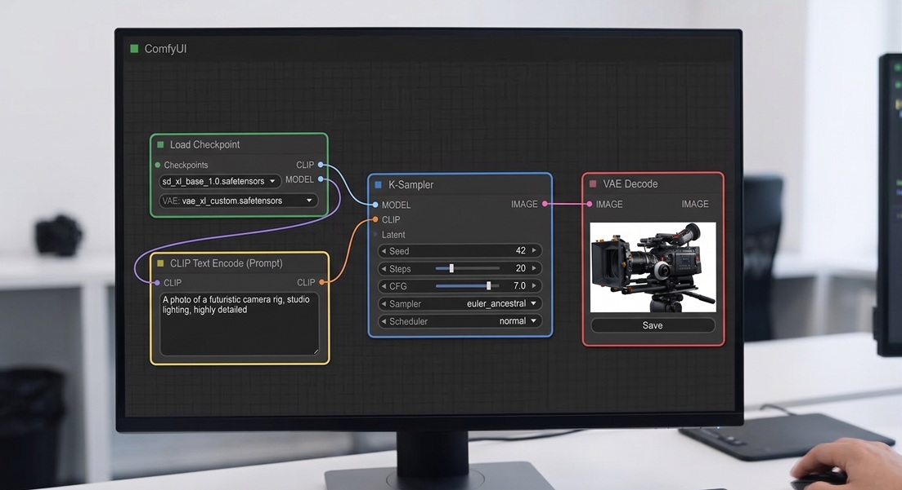

ComfyUI · Introduzione · PANORAMICA TECNICA
Cosa è ComfyUI
ComfyUI è un'interfaccia gratuita e open source, basata su nodi, per costruire visivamente pipeline di generazione AI di immagini (e video, 3D, audio) — senza codice, solo nodi collegati da fili. Questo articolo spiega cos'è un nodo, come si collegano, e come appare un grafo di base da testo a immagine.
ComfyUI è un'interfaccia grafica a nodi per la generazione di immagini1 (utilizzo presentato in questo blog), ma anche di testi, video, modelli 3D e altro. A differenza dei tool basati solo su prompt testuali, permette di costruire pipeline visive complesse (grafi di nodi funzionali), in cui ogni passaggio del processo generativo è esplicito, modificabile e componibile con altri grafi — intuitivamente come il Lego. Questo articolo introduce i componenti di base — nodi, connessioni, argomenti di input, parametri — senza presupporre conoscenze di programmazione. Questo post non è un corso introduttivo: per tutorial esterni e risorse online commentate, vedi ComfyUI: sitografia ragionata. NOTA: Se vi annoiano i tecnicismi di questa parte, passate direttamente a sfogliare le storie listate nella pagina Graphic novel e Storyboard.

-
01
Nodi, connessioni, argomenti di input, parametri
I framework (open source) per la personalizzazione di storie visive, che si spingano in una direzione professionale (ossia conservino identitità e corenza di personaggi e ambienti nel tempo, sono oggi i sistemi node-based (la cui costruzione è assistita dall'AI). Per semplificare: si tratta di diagrammi di nodi, ognuno dotato di una funzione elementare, i quali, combinati insieme, formano aggregati dotati di un significato e una propria utilità. In parole povere, come i mattoncini Lego, nati come linguaggio fisico di creatività universale. Nel nostro caso, la creatività non è qualla di fare casette e automobili, ma sistemi AI. ComfyUI, che tratteremo in queste pagine, è probabilmente oggi l'architettura open-source più completa e diffusa a tale scopo. Dotata di 60.000 nodi personalizzati (ma gli essenziali sono circa 100-200) per creare immagini, video, 3D e audio. Ma che cosa è al dunque ComfyUI. ComfyUI si fonda su 3 elementi costitutivi: Nodi, Argomenti, Connettivi. Uno o più nodi di input ricevono dati e informationi in ingresso. In modo simmetrico, uno o più nodi di output emettono dati e informationi in uscita. In mezzo viene costruita una rete di altri nodi connessi tra loro per trasformare l'informazione dall'Input all'Output. Il nodo è un'unità di elaborazione autonoma che svolge una funzione base — caricare un modello di rete, codificare un prompt testuale, trasformare un'immagine in chiaro in un vettore latente, e cos' via. Le connessioni possono essere viste come i cavi che collegano l'uscita di un nodo all'ingresso di un altro, creando così delle catene in cui passa l'informazione (detto altrimenti: i dati). Evitando definizioni formali, l'insieme di queste catene costituiscono un grafo, ossia un insieme di nodi connessi, a partire da uno o più Input per arrivare a uno o piu Output. I grafi danno luogo a un workflow (flusso di lavoro, o meglio flusso di passaggio di informazioni) definito pipeline, come il sistema di condotte di tubi petroliferi. Gli argomenti sono le variabili in input della funzione o della rete neurale che viene sottesa dal nodo. L'utente può scorrerle in slot predefiniti e inserire determinati valori, senza dover agire direttamente su linee di codice. Per un utente ComfyUI gli argomenti sono dei parametri esposti direttamente nella casella grafica che forma il nodo — campi di testo, menu a tendina, slider numerici, ecc — che permettono di configurare il nodo. L'insieme di questi elementi rendono ogni pipeline pienamente leggibile: è possibile seguire l'intero processo generativo da sinistra a destra, vedendo sull'interfaccia (Canvas) l'andamento del flusso.
-
02
L'esempio ComfyUI in figura
Scomponiamo il grafo ComfyUI in figura nelle sue componenti. Questa pipeline rappresenta un flusso base per la generazione di immagini text-to-image (ovvero da un testo descrittivo all'imagine generata) utilizzando il modello Stable Diffusion XL. Il processo segue un percorso logico da sinistra in alto verso destra: il flusso delle informazioni attraversa i nodi: Load Checkpoint, Clip, K-sampler, VAE Decode. Questi nodi sono connessi con degli archi (in pratica i fili di congiunzione) che escono a dx di ogni nodo ed entrano a sx del nodo successivo. Vediamo il significato di questi nodi e come sono connessi.
- Load Checkpoint (Verde) — Questo nodo è il punto di partenza. Carica la rete neurale (il modello base Stable Diffusion XL: SDXL) dai file di checkpoint (il checkpoint è lo stato dei file della rete neurale che ha già appreso ). Fornisce i tre componenti essenziali della pipeline, che spieghiamo di seguito: il Modello SDXL (per generare l'immagine), la rete CLIP (per l'associazione testo/img) e la rete VAE (per la decodifica finale in chiaro dell'immagine)
- CLIP Text Encode (Giallo) Questo nodo riceve il prompt di testo (as.:A photo of a futuristic camera rig...) e lo invia al componente CLIP. Questa componente allinea il testo alle immagini pregresse che contiene nel dataset (dato che è pre-addestrato su miliardi di coppie testo/img). In parole povere 'riconosce' il testo come unione di frammenti (token) di immagini, all'interno di spazi matematici astratti (vettori di numeri).
- KSampler (Blu) — il nodo di campionamento centrale: attraverso una serie di iterazioni trasforma il rumore bianco in un'immagine definita (metaforicamente è come scoprire un'immagine nella nebbia e man mano metterla a fuoco). Riceve in input il modello SDXL e la descrizione dell'immagine, come si può vedere dalle connessioni che entrano nel nodo.
- VAE Decode (Viola) — Questo nodo riceve l'immagine vettoriale (ossia quella numerica codificata negli spazi matematici) prodotta dal K-Sampler e la traduce in pixel reali per creare l'immagine visibile in chiaro, che può poi essere salvata.
-
03
Come e perché lo usiamo in questa sede
This site uses ComfyUI as the generative engine for all its visual stories (comics and storyboards). Rather than generating images through a chat interface or a static web form (one shot), ComfyUI offers control over every stage of the process: model selection, text prompt encoding, parameter adjustment, and the insertion or removal of modules (character and environment conditioning, output post-processing, and so on)2. The pipelines built in this way are designed for sequential storytelling — graphic novel panels, storyboard frames, character body, face and costume — where consistency across different poses of the same character matters greatly (something that cannot be achieved simply by repeating prompts). All graph workflows associated with the stories are downloadable from their respective pages, listed in Comics and Storyboards.
Finally, one practically significant development. Until about eighteen months ago, ComfyUI graphs were built by hand, connecting pairs of module nodes through the graphical interface of the environment. This meant an enormous amount of work to create graphs of just 10–20 nodes — far smaller than those used to generate stories such as the one shown in Under the Asphalt, which have 80+ nodes and hundreds of connections. Today, through Vibe Coding it is possible to generate the graph JSON3 directly via an LLM (Claude, Gemini, the various GPT models from OpenAI, and others), and then, if needed, refine it directly in an editor or regenerate it through further Vibe Coding. An epoch-making shift whose full implications will become clearer over the next one to two years.
- il concetto di linguaggio a nodi non è nuovo nell'informatica. In breve, si tratta di avere un ambiente interattivo che non necessita della scrittura di codice, ma il programma viene creato connettendo blocchi grafici, ognuno dei quali ha una sua funzione. I primi prototitpi nascevano già negli anni 60, ma solo negli ultimi 20 anni, con la programmazione No Code questo approccio ha avuto successo. In definitiva, ComfyUI ha avuto l'intuizione e l'abilità organizzativa, di strutturare un ambiente AI No Code in cui i nodi erano delle componenti di reti neurali o funzioni grafiche con cui associarle. ↩
- Senza entrare in dettaglio, ComfyUI non offre solo un front end di progettazione con nodi e connessioni, ma anche l'integrazione con programmi (python) e (bash) script. Questo aspetto è utile in particolare per fare variazioni di un immagine, e per costruire Loop di funzioni, che rappresentano l'anima del nodo (di default, non è possibile fare loop di nodi in modo diretto, per cui occorre integrare codice nell'ambiente python). ↩
- JSON (JavaScript Object Notation: nato per Javascript e poi diffuso in molti ambiti) è un formato testuale di scambio per rappresentare dati strutturati — leggibile sia dagli umani che dalle macchine. ComfyUI utilizza JSON come formato nativo per i suoi grafi (workflow): ogni nodo, connessione e parametro di un grafo viene descritto in un singolo file .json che può essere condiviso (es.: via mail). E' sufficiente caricare il file drag/drop nell'interfaccia ComfyUI per vederlo visualizzato direttamente (esempio: come in figura). ↩
FAQ
ComfyUI è gratuito? Sì — è open source, con circa 60.000 nodi personalizzati creati dalla community, anche se quelli essenziali sono circa 100-200.
Serve saper programmare per usare ComfyUI? No. È un ambiente no-code, basato su nodi: si collegano blocchi grafici già pronti invece di scrivere codice. L'integrazione con Python/bash è disponibile per chi vuole ciclare o scrivere lo script di un workflow, ma è opzionale.
Cos'è un file workflow di ComfyUI? Ogni nodo, connessione e parametro di un grafo viene salvato in un unico file .json — il formato nativo che ComfyUI usa per salvare, condividere e ricaricare un workflow esattamente com'è stato costruito.
In cosa ComfyUI è diverso dal semplice scrivere un prompt su uno strumento come Gemini? Gemini trasforma un breve prompt testuale in un risultato in un solo passaggio. Questo unico passaggio è però quello che vede l'utente, ma in realtà il sottografo incluso nella generazione è complesso (basti pensare a come Gemini sia capace di creare decine di personaggi non citati, puramente per compatibilità tra la storia e scene simili già trainate). In modo differente, ComfyUI espone la pipeline come esplicita: questa viene costruita nel disegno del progetto dall'utente o dall'AI di supporto — più controllo, più configurazione. Vedi Gemini vs ComfyUI: un confronto per capire quando conviene l'uno o l'altro.
Correlati: ComfyUI Storie Visive — Concetti per come la pipeline di questo sito usa questi nodi per personaggi coerenti, e Gemini vs ComfyUI: un confronto per capire quando conviene uno strumento solo a prompt.